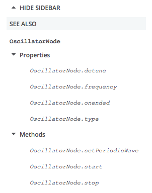

This guide takes you through all you need to know to write an API reference on MDN.
Prerequisite knowledge
It is assumed that before reading this guide you have a reasonable knowledge of:
- Web technologies like HTML, CSS and JavaScript. JavaScript is most important.
- Reading Web technology specs. You'll be looking at these a lot as you document APIs.
Everything else can be learned along the way.
Prerequisite resources
Before starting to document an API, you should have available:
- The latest spec: Whether it is a W3C Recommendation or an early editor's draft, you should refer to the latest available draft of the spec that covers (or specs that cover) that API. To find it, you can usually do a Web search. The latest version will often be linked to from all versions of the spec, listed under "latest draft" or similar.
- The latest modern web browsers: These should be experimental/alpha builds such as Firefox Nightly/Chrome Canary that are more likely to support the features you are documenting. This is especially pertinent if you are documenting a nascent/experimental API.
- Demos/blog posts/other info: Find as much info as you can.
- Useful engineering contacts: It is really useful to find yourself a friendly engineering contact to ask questions about the spec, someone who is involved in the standardization of the API, or its implementation in a browser. Good places to find them are:
- Your internal company address book, if you work for a relevant company.
- A public mailing list that is involved in the discussion of that API, such as Mozilla's dev-platform or dev-webapi lists, or a W3C list like public-webapps.
- The spec itself. For example, the Web Audio API spec lists the authors and their contact details at the top.
Take some time to play with the API
You will return to building demos many times through the course of documenting an API, but it is useful to start by spending time familiarizing yourself with how the API works — learn what the main interfaces/properties/methods are, what the primary use cases are, and how to write simple functionality with it.
When an API has changed, you need to be careful that existing demos you refer to or learn from are not out of date. Check the main constructs that are used in the demo to see if they match up to the latest spec. They may also not work in up-to-date browsers, but this is not a very reliable test, as often the old features continue to be supported for backwards compatibility.
Note: If the spec has been recently updated so that, say, a method is now defined differently, but the old method still works in browsers, you will often have to document both in the same place, so that the old and new methods are covered. If you need help, refer to demos you have found, or ask an engineering contact.
Create the list of documents you need to write or update
Reference documents for an API are quite numerous. There is an overview page for the API, a page for each interfaces, one for each method (including constructors) and property (including event handlers properties). There is also one page per event.
Overview page
The API overview page described the role of the API and the top-level interfaces. Its name is NAME OF API and its slug (that is the end part of the URL) must contains at least one space. It is placed at the top level of the API reference (https://developer.mozilla.org/en-US/docs/Web/API)
- Title: Web Audio API
- Slug: Web/API/Web_Audio_API
- Tags: must content the 'Overview' and 'API' tags
Note that most API have a special sidebar with quicklinks. This sidebar lists all interfaces, but all tutorials and related API.
Interfaces
Each interface will have its own page too. It will describe the purpose of the interface and lists all constructors, methods, and properties. The title of the page will be the name of the interface (always starting with an uppercase letter), its slug, the interface name, will be at the top level of the API reference (https://developer.mozilla.org/en-US/docs/Web/API)
- Title: AudioContext
- Slug: Web/API/AudioContext
- Tags: must content the API name as a tag (here Web Audio API), as well as Interface.
- Title: AudioNode
- Slug: Web/API/AudioNode
- Tags: must content the API name as a tag (here Web Audio API), as well as Interface.
Note: We document every properties and interfaces that will appear in the prototype of an object implementing this interface. This has the following consequences:
- We do not document in the interface inherited properties and methods: they are listed on the respective parent interface. We do hint of their existence though.
- We do implement properties and methods defines in mixins, though we use the mixin name as interface name. (This is not optimal as the mixin name will not appear in the console, but prevent the duplication of documentation. We may revisit this in the future.)
- There is one subpage per methods, or constructor: if there are several version, with different parameters, we still create one subpage and use the Syntax section on it to list all versions.
- Special methods like the stringfier (toString()) and the jsonizier (toJSON()) are also listed of they do exists.
- Named constructors (like Image() for
HTMLImageElement) are also listed, if relevent.
Properties
The set of properties of a given interface can be found on its WebIDL. We document each one in a single page. It will describe the purpose of the property, its syntax, and provide examples of use, in isolation. Its slug is the property name, as a subpage of the interface:
- Title: AudioContext.currentTime
- Slug: Web/API/AudioContext/currentTime
- Tags: must content the API name as a tag (here Web Audio API), the interface name (here AudioContext) as well as Proerty. If the property is read-only, like this example, Read-only must be added too.
- Title: AudioNode.numberOfInputs
- Slug: Web/API/AudioNode/numberOfInputs
- Tags: must content the API name as a tag (here Web Audio API), as well as Interface.
Note: Event handlers properties (onXYZ properties) are also listed: they'll have their individual subpage, like any other property.
Methods
Like for properties, methods are listed on the interface's WebIDL and we document each method in a single page. It will describe the purpose of the property, its syntax, and provide examples of use, in isolation. Its slug, without the parenthesis, is the property name, as a subpage of the interface:
- Title: AudioContext.createBuffer() Note the parenthesis, making it clear that it is a method.
- Slug: Web/API/AudioContext/createBuffer No parenthesis here.
- Tags: must content the API name as a tag (here Web Audio API), the interface name (here AudioContext) as well as Method.
Constructors
Similar in structure to methods, they also have their own pages. Note that only one unnamed constructor may exist per interface. The title convention is slightly different than the one of methods: it isn't prefixed.
- Title: Worker() Note the parenthesis and the absence of prefix
- Slug: Web/API/Worker/Worker No parenthesis here. Constructors are also subpages of the interface page.
- Tags: must content the API name as a tag (here Web Workers), the interface name (here Worker) as well as Constructor.
Events
Events are the last type of objects needing documentation. Unless the previous documents, event subpages lies under the Web/Events hierarchy. Each event has its own subpage:
- Title: start
- Slug: Web/Events/start
Listing them all
Creating a list of all these subpages is a good way to tracking them. For example:
- Web_Audio_API
- AudioContext
- AudioContext.currentTime
- AudioContext.destination
- AudioContext.listener
- ...
- AudioContext.createBuffer()
- AudioContext.createBufferSource()
- ...
- AudioNode
- AudioNode.context
- AudioNode.numberOfInputs
- AudioNode.numberOfOutputs
- ...
- AudioNode.connect(Param)
- ...
- AudioParam
- Events (update list)
- start
- end
- …
Each interface in the list has a separate page created for it as a subpage of https://developer.mozilla.org/en-US/docs/Web/API; for example, the document for AudioContext would be located at https://developer.mozilla.org/en-US/docs/Web/API/AudioContext. Each interface page explains what that interface does and provides a list of the methord and properties that comprise the interface. Then each method and property is documented on its own page, which is created as a subpage of the interface it's a member of. For instance, AudioContext.currentTime is documented at https://developer.mozilla.org/en-US/docs/Web/API/AudioContext/currentTime.
For example, given the list above, the AudioContext interface is documented at https://developer.mozilla.org/en-US/docs/Web/API/AudioContext
Now create the overview (API landing) page:
- Go to https://developer.mozilla.org/en-US/docs/Web/API and, making sure you are logged in, select the Cog icon > New sub-page. You should now be in an editor for a new page.
- Enter the title as the API name as defined by the spec, plus "API". So for example "Web Audio API", "IndexedDB API", or "MediaRecorder API".
- The Slug should be auto-filled, with underscores in the place of spaces. If it isn't, correct it.
- Enter some dummy content into the large content area, such as "TBD" or "Content", then click Save Changes. Or just soar right on into the section Overview page and start filling out the real content right away.
Your landing page now exists! Now all you have to do is fill it in, which is discussed in the next section.
Structure of an overview page
Important: This section is still a proposal, without consensus yet reached. Don't use it yet.
API landing pages will differ greatly in length, depending on how big the API is, but they will all have basically the same features. See https://developer.mozilla.org/en-US/docs/Web/API/Web_Audio_API for an example of a big landing page.
The features of a landing page are outlined below:
-
List of interfaces: This section should be titled "[name of API] interfaces", and provide links to the reference page for each interface that makes up the API. See the "Referencing other API features with the {{domxref}} macro" section for a quicker way to create new pages.
Note: If there are interfaces that have become obsolete as the specification has changed, you might want to move those to an "Obsolete Interfaces" section.
- Description: the first paragraph of the landing page should provide a short, concise description of the API's overarching purpose.
- Concepts and usage section: The next section should be titled "[name of API] concepts and usage", and provide an overview of all the main functionality that the API provides, what problems it solves, and how it works — all at a high level. This section should be fairly short, and not go into code or specific implementation details.
- List of interfaces: This section should be called "[name of API] interfaces", and contain a list of the interfaces in the API, along with a short description of what each one does.
- Specifications table: At this point you need to include a specifications table — see the "Creating a spec reference table" section for more details.
- Browser compatibility: Now you need to include a browser compatibility table — see the "Creating a browser support table" section for more details.
- See also: The "See also" section is a good place to include further links that may be useful when learning about this technology, including MDN (and external) tutorials, examples, libraries, etc.
- Tags: There is a set of standard tags you should include for each reference page — see the "Tags" section for more.
Structure of an interface pages
Now you should be ready to start writing your interface pages. Each interface reference page should observe the following structure:
- {{APIRef()}}: Include the {{APIRef()}} macro in the first line of each interface page, including the name of the API as an argument, so for example {{APIRef("Web Audio API")}}. This macro serves to construct a reference menu on the left hand side of the interface page, including properties and methods, and other quicklinks as defined in the GroupData macro (ask someone to add your API to an existing GroupData entry, or to create a new one, if it isn't already listed there). The menu will look something like the below screenshot.
 - Standardization status: The banner indicating the standardization status should be added next (these can be placed on the same line as the {{APIRef}} macro.):
- {{SeeCompatTable}} for an experimental feature (i.e. the spec is not at the CR level.)
- {{Deprecated_header}}
- {{Obsolete_header}}
- {{Non-standard_header}}
- Description: the first paragraph of the interface page should provide a short concise description of the interface's overarching purpose. You may also want to include a couple more paragraphs if any additional description is required.
-
List of properties, List of methods: These sections should be titled "Properties" and "Methods", and provide links (using the {{domxref}} macro) to a reference page for each property/method of that interface, along with a description of what each one does. These should be marked up using description/definition lists, which can be created using the "Definition List", "Definition Term", and "Definition Description" buttons on the MDN editor toolbar. Each description should be short and concise — one sentence if possible. See the "Referencing other API features with the {{domxref}} macro" section for a quicker way to create links to other pages.
At the beginning of both sections, before the beginning of the list of properties/methods, indicate inheritance using the appropriate sentence, in italics:
This interface doesn't implement any specific property, but inherits properties from {{domxref(XYZ)}}, and {{domxref(XYZ2)}}.
This interface also inherits properties from {{domxref(XYZ)}}, and {{domxref(XYZ2)}}.
This interface doesn't implement any specific mehtod, but inherits methods from {{domxref(XYZ)}}, and {{domxref(XYZ2)}}.
This interface also inherits methods from {{domxref(XYZ)}}, and {{domxref(XYZ2)}}.Note: If the interface features event handlers, put these inside the "Properties" section (they are a type of property) under a subheading of "Event handlers".
Note: Properties that are read-only should have the {{readonlyInline}} macro, which creates a nifty little "Read only" badge, included on the same line as their {{domxref()}} links (after the use of the {{experimentalInline}}, {{obsoleteInline}}, {{non-standard_Inline}} and {{deprecatedInline}} macros, if some of these are needed.
- Example: Include a code listing to show typical usage of a major feature of the API. Rather than listing ALL the code, you should list an interesting subset of it. For a complete code listing, you could reference a Github repo containing the full example, and you could also link to a live example created using the Github gh-pages feature (so long as it uses only client-side code of course.) If the example is visual, you could also use the MDN Live Sample feature to make it live and playable in the page.
Note: More details about writing code examples can be found in the "Examples" section.
- Specifications table: At this point you need to include a specifications table — see the "Creating a spec reference table" section for more details.
- Browser compatibility: Now you need to include a browser compatibility table — see the "Creating a browser support table" section for more details.
- See also: The "See also" section is a good place to include further links that may be useful when learning about this technology, including MDN (and external) tutorials, examples, libraries, etc. We have a liberal policy for linking to external sources, but pay attention:
- Do not include pages with the same information as another page in the MDN; link to that page instead.
- Do not put author names — we are a writer-neutral documentation site. Link to the document; the author name will be displayed there.
- Pay special attention to blog posts: they tend to become outdated (old syntax, wrong compat information). Link to them only if they have a clear added value that can't be found in a maintained document.
- Do not use action verb like "See … for more information" or "Click to…", you don't know if your reader is able to see, or to click on the link (like on a paper version of the document).
- Tags: There is a set of standard tags you should include for each reference page — see the "Tags" section for more.
Structure of a property page
You can now fill in your interface property pages. Since the structures of all of them are the same, it usually works best to open all the property pages for each interface in separate tabs. From here you can fill one in fully, then copy its contents to all the other property pages and just update the bits that need changing, rather than having to fill each one in from scratch.
Edit the property page name to follow the Interface.property_name convention.
Property pages must have the following sections:
- Title: the title of the page must be InterfaceName.method. The interface name must start with a capital. Although an interface is implemented in JavaScript on the prototype of objects, we don't put
.prototype.in the title, like we do in the JavaScript reference. - {{APIRef()}}: Include the {{APIRef()}} macro in the first line of each property page, including the name of the API as an argument, so for example {{APIRef("Web Audio API")}}. This macro serves to construct a reference menu on the left hand side of the interface page, including properties and methods, and other quicklinks as defined in the GroupData macro (ask someone to add your API to an existing GroupData entry, or to create a new one, if it isn't already listed there). The menu will look something like the below screenshot.
- Standardization status: The banner indicating the standardization status should be added next to the interface name (these can be placed on the same line as the {{APIRef}} macro):
- {{SeeCompatTable}} for an experimental feature (i.e. the spec is not at the CR level.)
- {{Deprecated_header}}
- {{Obsolete_header}}
- {{Non-standard_header}}
- Description: the first paragraph of the property page should provide a short, concise description of the property's overarching purpose. You may also want to include a couple more paragraphs if any additional description is required. Obvious extra information to include is its default/initial value, and whether it's read only or not. The structure of the first sentence must be:
- For read-only properties
- The
IFName.PropertyNameread-only property returns a {{domxref("type")}} that... - For other properties
- The
IFName.PropertyNameproperty is a {typethat…
Note:IFName.PropertyNameshould be in bold(<strong>) and in <code>. - Syntax: The syntax section should show how to get the property, and how to set it, if it's not read only. Use the
syntaxboxclass for it and italics for part to be replaced by the actual variable name. For example:var myType = oscillator.type; oscillator.type = aType;
-
Example: Include a code listing to show typical usage of the property in question. You should start with a simple example that shows how an object of the type is created and how to access the property. More complex examples can be added after such an example. In these additional examples, rather than listing ALL the code, you should list an interesting subset of it. For a complete code listing, you can reference a Github repo containing the full example, and you could also link to a live example created using the github gh-pages feature (so long as it uses only client-side code of course.) If the example is visual, you could also use the MDN Live Sample feature to make it live and playable in the page.
Note: If you make use of Github, the example must live under github.com/mdn. See the "Examples" section for more details. - Specifications table: At this point you need to include a specifications table — see the "Creating a spec reference table" section for more details.
- Browser compatibility: Now you need to include a browser compatibility table — see the "Creating a browser support table" section for more details.
- See also: The "See also" section is a good place to include further links that may be useful when using this technology: like methods and properties affected by a change of this property or events thrown in relation to it. More links useful when learning about this technology, including MDN (and external) tutorials, examples, libraries,… can be added, though it may be useful to consider adding them on the interface reference page instead.
- Tags: There is a set of standard tags you should include for each property page — see the "Tags" section for more.
Structure of a method page
You can now fill in your interface method pages. Since the structure of all of them are the same, one possible way of doing it is to open all the method pages for each interface in separate tabs. From here you can fill one in fully, then copy its contents to all the other method pages and just update the bits that need changing, rather than having to fill each one in from scratch.
Method pages need the following sections:
- Title: the title of the page must be InterfaceName.method() (with the two terminal parenthesis), but the slug (the end of the page URL) must not include the brackets. Also the interface name must start with a capital. Although an interface is implemented in JavaScript on the prototype of objects, we don't put
.prototype.in the title, like we do in the JavaScript reference. - {{APIRef()}}: Include the {{APIRef()}} macro in the first line of each method page, including the name of the API as an argument, so for example {{APIRef("Web Audio API")}}. This macro serves to construct a reference menu on the left hand side of the interface page, including properties and methods, and other quicklinks as defined in the GroupData macro (ask someone to add your API to an existing GroupData entry, or to create a new one, if it isn't already listed there). The menu will look something like the below screenshot.
- Standardization status: Next, the banner indicating the standardization status should be added (these can be placed on the same line as the {{APIRef}} macro):
- {{SeeCompatTable}} for an experimental feature (i.e. the spec is not at the CR level.)
- {{Deprecated_header}}
- {{Obsolete_header}}
- {{Non-standard_header}}
- Description: The first paragraph of the method page should provide a short concise description of the method's overarching purpose. You may also want to include a couple more paragraphs if any additional description is required. Obvious extra information to include is its default parameter values, any theory that the method relies on, and what the parameter values do.
- The beginning of the first sentence must follow the following structure:
- The InterfaceName.method() method interface ...
-
Note:
IFName.MethodNameshould be in bold(<strong>) and in <code>.
- Syntax: The syntax section should include a 2–3 line example — usually just construction of the interface, then calling of the interface method.
- The syntax should be of the form:
- var <em>returnValue</em> = <em>ifName</em>.method(<em>param1</em>, <em>param2</em>, ...)
- If the method has no return value (void as return value in the webidl), use:
- <em>ifName</em>.method(<em>param1</em>, <em>param2</em>, ...)
- The syntax section should include a subsection titled "Returns" — this should say what return value the method has, be it a simple value like a double or boolean, or a more complex value like another interface object, in which case you can use {{domxref()}} macro to link to the MDN API page covering that interface (if it exists.) A method might return nothing, in which case the return value is "Void".
- Example: Include a code listing to show typical usage of the method in question. Rather than listing ALL the code, you should list an interesting subset of it. For a complete code listing, you should reference a Github repo containing the full example, and you could also link to a live example created using the Github gh-pages feature (so long as it uses only client-side code of course.) See the "Examples" section for more details. If the example is visual, you could also use the MDN Live Sample feature to make it live and playable in the page.
- Specifications table: At this point you need to include a specifications table — see the "Creating a spec reference table" section for more details.
- Browser compatibility: Now you need to include a browser compatibility table — see the "Creating a browser support table" section for more details.
Specific page component coverage
This section outlines some methodologies for filling in specific areas of API references.
Referencing other API features with the {{domxref}} macro
You can create a link to an API page, that is, a child page of https://developer.mozilla.org/en-US/docs/Web/API/, using the {{domxref}} macro in one of two different ways. Let's take https://developer.mozilla.org/en-US/docs/Web/API/PannerNode.setPosition as an example:
- If you want to link to the exact page title, you can do so just by including the title slug as a single macro argument, for example {{domxref("PannerNode.setPosition()")}}. If it is a method, always add the final brackets (the macro takes care of them).
- If you want the link text to be different from the page title, you can include two arguments. The first will be the title slug, like before, and the second is the link text you want, for example {{domxref("PannerNode.setPosition", "setPosition()")}}. Don't include an article or the words "method" or "property" in the link.
When you want to create new pages there is a quicker way than having to go to the parent page (probably https://developer.mozilla.org/en-US/docs/Web/API in this case) and pressing "New sub-page" for each one. Instead, you can use the {{domxref()}} macro to automatically create a link to the interface page at the right place in the MDN hierarchy, for example {{domxref("MyInterfacePage")}} would create a link to https://developer.mozilla.org/en-US/docs/Web/API/MyInterfacePage. When you've saved the current page, such links will appear on the page. When you then follow them, you will go to the "Create a New Document" page because that page doesn't exist yet — from here, you can fill in the content of each new page.
Creating a browser support table
The title (<h2>) of the browser compat section reference table is "Browser compatibility". Always use a capital B and a small c.
The browser support table — with the two tabs to switch between desktop and mobile support information — is created by first including the {{CompatibilityTable}} macro, then below that including a structure like this:
<div id="compat-desktop">
<table class="compat-table">
...
</table>
</div>
<div id="compat-mobile">
<table class="compat-table">
...
</table>
</div>
So we have two separate tables, one for desktop compat info and one for mobile. You are probably best off copying the exact syntax structure from an existing page, like https://developer.mozilla.org/en-US/docs/Web/API/PannerNode — copy the source from the source mode (press the Source button in the WYSIWYG), not the WYSIWYG view, to make sure everything is copied correctly.
The columns are pretty standard across all pages, and include most major browsers worth worrying about.
In terms of what to include on what pages for rows:
- If everything inside an API/interface is supported the same, you only need to include one "basic support" row. If some properties/methods/interfaces have different levels of support, you'll need to include a separate row for each one.
- For property/method pages, you'll sometimes need to include different support information in different rows, for example if new parameters are included, parameters are made optional, new events are raised, new return values are added, etc.
In terms of what to include inside the cells:
- If Gecko supports it, include the {{CompatGeckoDesktop(25.0)}} macro, the number being the Gecko version that first supported it. This is mainly useful inside the desktop Firefox column. This will create a link to the relevant set of Firefox developer release notes for that version.
- If another browser supports it, just fill in a plain number for the version.
- If a browser supports it but with a prefix, alongside the version number include a macro to display an inline banner to include which prefix. For example, {{property_prefix("webkit")}} or {{property_prefix("moz")}}. Use the right version of the prefix: pay attention to the casing or to eventual oddities.
- If a browser supports it, but you are not sure of the details, include {{CompatVersionUnknown}}.
- If a browser definitely doesn't support it, include {{CompatNo}}.
- If you don't know if a browser supports it, include {{CompatUnknown}}.
Creating a spec reference table
The title (<h2>) of the spec reference table section is "Specifications". Always use the plural, even if there is only one.
A specification table is a simple three column, two row table, with the first row containing headings of "Specification", "Status", and "Comment", and the second (data) row containing the following:
Below "Specification"
Include the {{SpecName}} macro, which should include three arguments as follows:
- The name of the specification, e.g. "Web Audio API". This should be exactly as it is listed in the SpecName template page: https://developer.mozilla.org/en-US/docs/Template:SpecName. If it is not yet listed in that template page, you need to add it, or get someone else to if you don't have admin privileges. The structure is fairly obvious. Make sure the spec URL included is the URL of the most useful spec (usually the latest editor's draft).
- The document fragment from the spec pointing to the exact description of the interface, property or method the current page you are writing is about. In most specs, EVERYTHING has a separate document fragment so anything can be linked to. For example, for the spec table on the https://developer.mozilla.org/en-US/docs/Web/API/PannerNode page, the document fragment included is #the-pannernode-interface. This was got from URL of the section in the spec that describes the PannerNode — http://webaudio.github.io/web-audio-api/#the-pannernode-interface.
- The name of the interface/property/method being described. For example, for the PannerNode page, just put "PannerNode".
The full macro call looks like so:
{{SpecName('Web Audio API', '#the-pannernode-interface', 'PannerNode')}}
This produces a link pointing to the exact description of the PannerNode in the Web Audio API specification, with an adequate tooltip.
Under "Status"
Include the {{Spec2}} macro, which should include one argument, the name of the spec exactly as included in the Spec2 template page (https://developer.mozilla.org/en-US/docs/Template:Spec2), for example {{Spec2('Web Audio API')}}.
If it is not yet listed in that template page, you need to add it, or get someone else to if you don't have admin privileges. The structure is fairly obvious: Make sure the spec status included is the status listed in the latest available spec.
Under "Comment"
The comment field is usually left blank, unless...TBD
Examples
A good API example for learning differs from an actual piece of production code. In production code you are aiming for efficiency, optimization, and concise work. In example learning code you are really aiming for one thing — ease of readability and comprehension. Therefore, make it as simple and readable as possible. Don't use the frameworks or libraries you normally would in your standard workflow. Don't include a series of helper classes to encapsulate and streamline the raw API calls, unless they really help explain the task in hand. Otherwise you increase the amount of previous knowledge required to understand the example, and risk obfuscating what you are trying to convey and making the learner's job harder.
An example doesn't necessarily have to show ONLY ONE property or method in action. It often doesn't make sense to only show one each time, as many of them will work together. And to save you time when writing examples, it often makes sense to group related methods, etc. into the same example. In these cases, highlight the method or property that you are documented (add highlight:[12] where 12 is a line number as a class for the <pre> containing your syntax-highlighted example.
An example should ideally do something interesting, perhaps entertain the reader, maybe even make them smile. It shouldn't just be totally trivial. An example that actually does something won't just teach the reader about the method/property you are demonstrating; it might also show them what can be done with it, and give them some inspiration for their own work.
Pay attention to accessibility in code examples! For example, no feature should be activated on :hover only: you need to enable support by multiple devices and control mechanisms.
It is also nice to show a live example of the code working, as well as providing the full source code to grab and play with. This is why we tend to use Github's gh-pages feature, and/or the MDN Live Sample feature to make it live and playable in the page.
Note: After creating a gh-pages branch, we usually set that to the repo's default branch in the repo settings on Github, and then checkout that branch and always make changes to gh-pages only going forward. If you don't do this, you then have to make the changes to master AND gh-pages, which is a pain.
See https://github.com/mdn/ for a series of MDN examples.
Tagging
For API reference pages, there are standard tags that all pages should have:
- "API"
- "Reference"
- Name of API (e.g. "Web Audio API")
- Any pertinent related keywords (e.g. "audio")
For Interface pages, also add:
- "Interface"
- The name of the interface, e.g. "AudioContext"
For method pages, also add:
- "Method"
- The name of the interface the method relates to, e.g. "AudioContext"
- The name of the method, e.g. "createBuffer"
For property pages, also add:
- "Property"
- The name of the interface the property relates to, e.g. "AudioContext"
- The name of the property, e.g. "currentTime"
In all cases, also add a keyword indicating the standardization status:
- Experimental (if the spec is not a CR)
- Deprecated
- Obsolete
- Non-standard
These tags will be used to generate correct quicklinks, with nice icons.